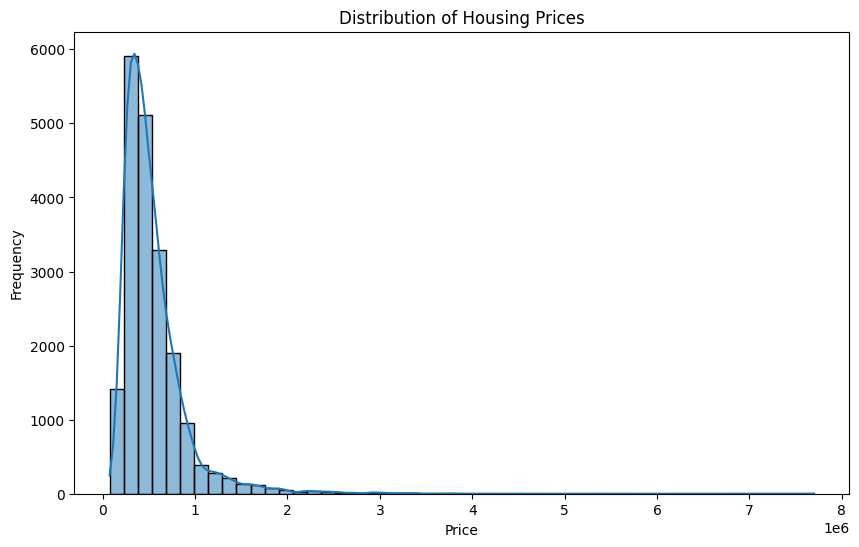

!pip install scikit-learn==1.5.2import pandas as pd
housing = pd.read_csv('https://raw.githubusercontent.com/byui-cse/cse450-course/master/data/housing.csv')
housing| id | date | bedrooms | bathrooms | sqft_living | sqft_lot | floors | waterfront | view | condition | ... | sqft_above | sqft_basement | yr_built | yr_renovated | zipcode | lat | long | sqft_living15 | sqft_lot15 | price | |
|---|---|---|---|---|---|---|---|---|---|---|---|---|---|---|---|---|---|---|---|---|---|
| 0 | 1565930130 | 20141104T000000 | 4 | 3.25 | 3760 | 4675 | 2.0 | 0 | 0 | 3 | ... | 2740 | 1020 | 2007 | 0 | 98038 | 47.3862 | -122.048 | 3280 | 4033 | 429900.0 |
| 1 | 3279000420 | 20150115T000000 | 3 | 1.75 | 1460 | 7800 | 1.0 | 0 | 0 | 2 | ... | 1040 | 420 | 1979 | 0 | 98023 | 47.3035 | -122.382 | 1310 | 7865 | 233000.0 |
| 2 | 194000575 | 20141014T000000 | 4 | 1.00 | 1340 | 5800 | 1.5 | 0 | 2 | 3 | ... | 1340 | 0 | 1914 | 0 | 98116 | 47.5658 | -122.389 | 1900 | 5800 | 455000.0 |
| 3 | 2115510160 | 20141208T000000 | 3 | 1.75 | 1440 | 8050 | 1.0 | 0 | 0 | 3 | ... | 1440 | 0 | 1985 | 0 | 98023 | 47.3187 | -122.390 | 1790 | 7488 | 258950.0 |
| 4 | 7522500005 | 20140815T000000 | 2 | 1.50 | 1780 | 4750 | 1.0 | 0 | 0 | 4 | ... | 1080 | 700 | 1947 | 0 | 98117 | 47.6859 | -122.395 | 1690 | 5962 | 555000.0 |
| ... | ... | ... | ... | ... | ... | ... | ... | ... | ... | ... | ... | ... | ... | ... | ... | ... | ... | ... | ... | ... | ... |
| 19995 | 5272200045 | 20141113T000000 | 3 | 1.50 | 1000 | 6914 | 1.0 | 0 | 0 | 3 | ... | 1000 | 0 | 1947 | 0 | 98125 | 47.7144 | -122.319 | 1000 | 6947 | 378000.0 |
| 19996 | 9578500790 | 20141111T000000 | 3 | 2.50 | 3087 | 5002 | 2.0 | 0 | 0 | 3 | ... | 3087 | 0 | 2014 | 0 | 98023 | 47.2974 | -122.349 | 2927 | 5183 | 399950.0 |
| 19997 | 7202350480 | 20140930T000000 | 3 | 2.50 | 2120 | 4780 | 2.0 | 0 | 0 | 3 | ... | 2120 | 0 | 2004 | 0 | 98053 | 47.6810 | -122.032 | 1690 | 2650 | 575000.0 |
| 19998 | 1723049033 | 20140620T000000 | 1 | 0.75 | 380 | 15000 | 1.0 | 0 | 0 | 3 | ... | 380 | 0 | 1963 | 0 | 98168 | 47.4810 | -122.323 | 1170 | 15000 | 245000.0 |
| 19999 | 6147650280 | 20150325T000000 | 4 | 2.50 | 3130 | 5999 | 2.0 | 0 | 0 | 3 | ... | 3130 | 0 | 2006 | 0 | 98042 | 47.3837 | -122.099 | 3020 | 5997 | 315000.0 |
20000 rows × 21 columns
housing['yr_built'].min()1900housing.info()<class 'pandas.core.frame.DataFrame'>
RangeIndex: 20000 entries, 0 to 19999
Data columns (total 21 columns):
# Column Non-Null Count Dtype
--- ------ -------------- -----
0 id 20000 non-null int64
1 date 20000 non-null object
2 bedrooms 20000 non-null int64
3 bathrooms 20000 non-null float64
4 sqft_living 20000 non-null int64
5 sqft_lot 20000 non-null int64
6 floors 20000 non-null float64
7 waterfront 20000 non-null int64
8 view 20000 non-null int64
9 condition 20000 non-null int64
10 grade 20000 non-null int64
11 sqft_above 20000 non-null int64
12 sqft_basement 20000 non-null int64
13 yr_built 20000 non-null int64
14 yr_renovated 20000 non-null int64
15 zipcode 20000 non-null int64
16 lat 20000 non-null float64
17 long 20000 non-null float64
18 sqft_living15 20000 non-null int64
19 sqft_lot15 20000 non-null int64
20 price 20000 non-null float64
dtypes: float64(5), int64(15), object(1)
memory usage: 3.2+ MBhousing.describe()| id | bedrooms | bathrooms | sqft_living | sqft_lot | floors | waterfront | view | condition | grade | sqft_above | sqft_basement | yr_built | yr_renovated | zipcode | lat | long | sqft_living15 | sqft_lot15 | price | |
|---|---|---|---|---|---|---|---|---|---|---|---|---|---|---|---|---|---|---|---|---|
| count | 2.000000e+04 | 20000.000000 | 20000.000000 | 20000.000000 | 2.000000e+04 | 20000.00000 | 20000.000000 | 20000.000000 | 20000.000000 | 20000.000000 | 20000.000000 | 20000.000000 | 20000.000000 | 20000.000000 | 20000.000000 | 20000.000000 | 20000.000000 | 20000.000000 | 20000.00000 | 2.000000e+04 |
| mean | 4.580297e+09 | 3.370200 | 2.115750 | 2079.883100 | 1.501533e+04 | 1.49645 | 0.007550 | 0.234900 | 3.409700 | 7.657700 | 1790.232900 | 289.650200 | 1971.100150 | 82.732150 | 98077.876850 | 47.559970 | -122.213897 | 1986.387500 | 12748.96040 | 5.394367e+05 |
| std | 2.875295e+09 | 0.931931 | 0.770134 | 919.433672 | 3.970135e+04 | 0.54095 | 0.086564 | 0.767692 | 0.651895 | 1.175287 | 829.587101 | 441.537072 | 29.374008 | 397.872344 | 53.438026 | 0.138517 | 0.140649 | 685.211515 | 27076.48904 | 3.664334e+05 |
| min | 1.000102e+06 | 0.000000 | 0.000000 | 290.000000 | 5.200000e+02 | 1.00000 | 0.000000 | 0.000000 | 1.000000 | 1.000000 | 290.000000 | 0.000000 | 1900.000000 | 0.000000 | 98001.000000 | 47.155900 | -122.519000 | 399.000000 | 651.00000 | 7.500000e+04 |
| 25% | 2.123049e+09 | 3.000000 | 1.750000 | 1430.000000 | 5.040000e+03 | 1.00000 | 0.000000 | 0.000000 | 3.000000 | 7.000000 | 1200.000000 | 0.000000 | 1951.750000 | 0.000000 | 98033.000000 | 47.470675 | -122.328000 | 1490.000000 | 5100.00000 | 3.220000e+05 |
| 50% | 3.904955e+09 | 3.000000 | 2.250000 | 1910.000000 | 7.620000e+03 | 1.50000 | 0.000000 | 0.000000 | 3.000000 | 7.000000 | 1560.000000 | 0.000000 | 1975.000000 | 0.000000 | 98065.000000 | 47.571450 | -122.230000 | 1840.000000 | 7622.00000 | 4.500000e+05 |
| 75% | 7.309825e+09 | 4.000000 | 2.500000 | 2550.000000 | 1.071000e+04 | 2.00000 | 0.000000 | 0.000000 | 4.000000 | 8.000000 | 2210.000000 | 560.000000 | 1997.000000 | 0.000000 | 98117.000000 | 47.678000 | -122.124000 | 2360.000000 | 10088.25000 | 6.416250e+05 |
| max | 9.900000e+09 | 33.000000 | 8.000000 | 13540.000000 | 1.164794e+06 | 3.50000 | 1.000000 | 4.000000 | 5.000000 | 13.000000 | 9410.000000 | 4820.000000 | 2015.000000 | 2015.000000 | 98199.000000 | 47.777600 | -121.315000 | 6210.000000 | 871200.00000 | 7.700000e+06 |
import matplotlib.pyplot as plt
import seaborn as sns
plt.figure(figsize=(10, 6))
sns.histplot(housing['price'], bins=50, kde=True)
plt.title('Distribution of Housing Prices')
plt.xlabel('Price')
plt.ylabel('Frequency')
plt.show()